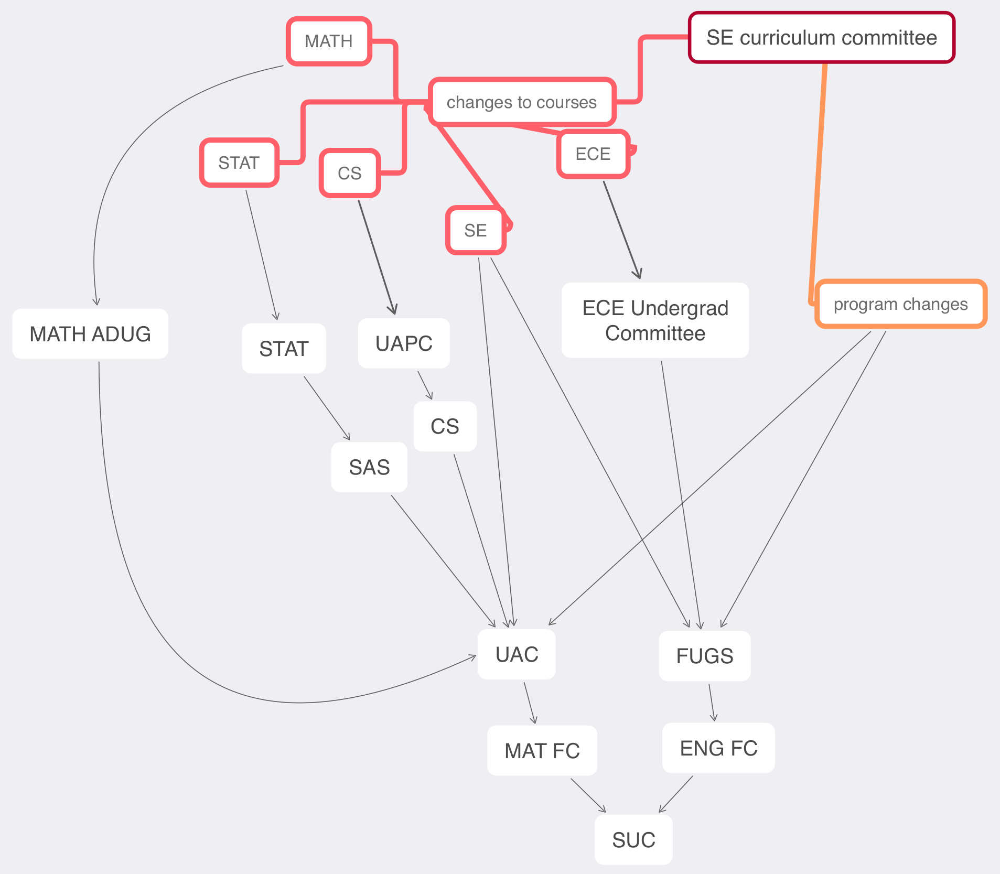

Hello SE Students,
Hope you had a good weekend. Let's see what's happening this week:
Ever wonder how changes to the SE Curriculum happen? Well, most of them start at the SE Curriculum Committee. From there it's a bit complicated. Math Associate Dean Undergraduate Benoit Charbonneau recently drew this flowchart (with input from Patrick and myself) of all the committees involved, depending on which kind of change it is:
Changing your elective lists is changes to the program, so that's the orange box that flows to UAC (Math Undergraduate Affairs Committee) and FUGS (Engineering Faculty Undergraduate Studies Committee), then on to the respective faculty committees, and finally the Senate Undergraduate Committee (SUC). It takes about a year and half from when the SE Curriculum Committee makes a decision to when it actually appears in the calendar.
In the process of making this diagram, Patrick and I discovered how MATHxxx courses get changed: by talking to the Math Associate Dean Undergraduate. There is, formally, no committee. Neither Patrick nor I knew that. It was good to discover this knowledge, because I recently requested a change to MATH235, and so because I had this diagram I knew where to ask.
What change did I request for MATH235? It's Linear Algebra 2. It has a co-requisite for a calculus 2 course, but its list of calculus 2 courses does not includes your MATH119. So I asked for that to get added. In the process, I also asked Ayush from SE2022 to display co-requisites in UWFlow, which he did very promptly. A co-requisite is a course that you need to take at the same time (or earlier). So you need to take a calculus 2 course at the same time or earlier than MATH235. If you want to take MATH235, they will always accept your MATH119 as satisfying the co-requisite, but you will need a person to help you with the override: Quest will block you because MATH119 isn't actually on the co-requisite list.
Employment Stats: Amanda from SE2022 wrote in that UW has a nice website that draws nice graphs about co-op employment stats that are more current than the somewhat stale reports that get emailed to me. Here it is:
Let's see if I can wait until Wednesday to email you again ... maybe something really exciting will happen before then ... maybe I'll do some soldering on a bike and want to tell you about it ... we'll see ;)
Be well, do good work, stay in touch,
-- Derek Rayside, PhD, PEng Director, Software Engineering University of Waterloo Calendar. DC-2539 or E7-5426.